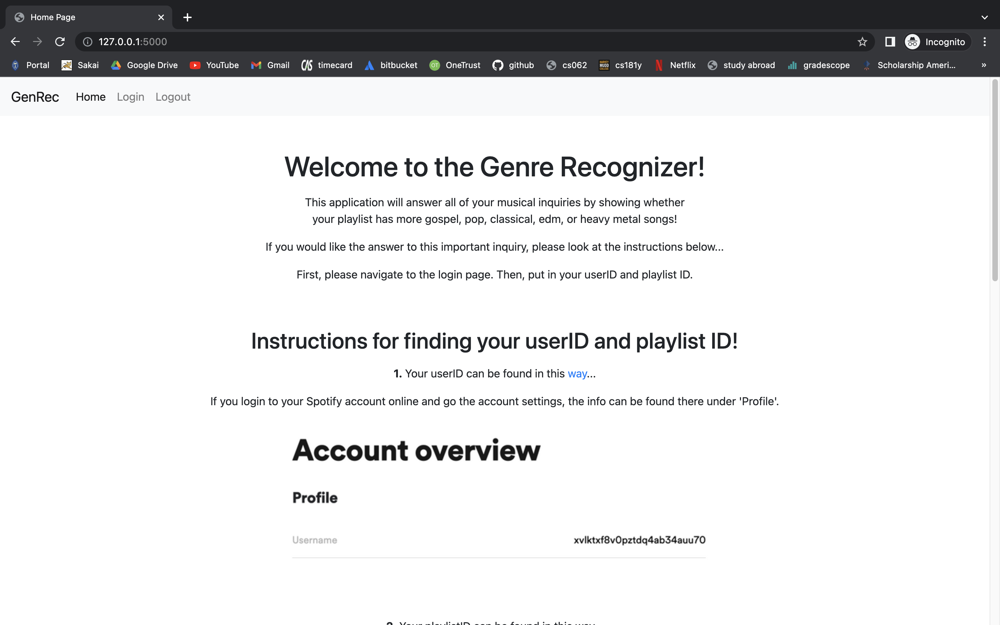
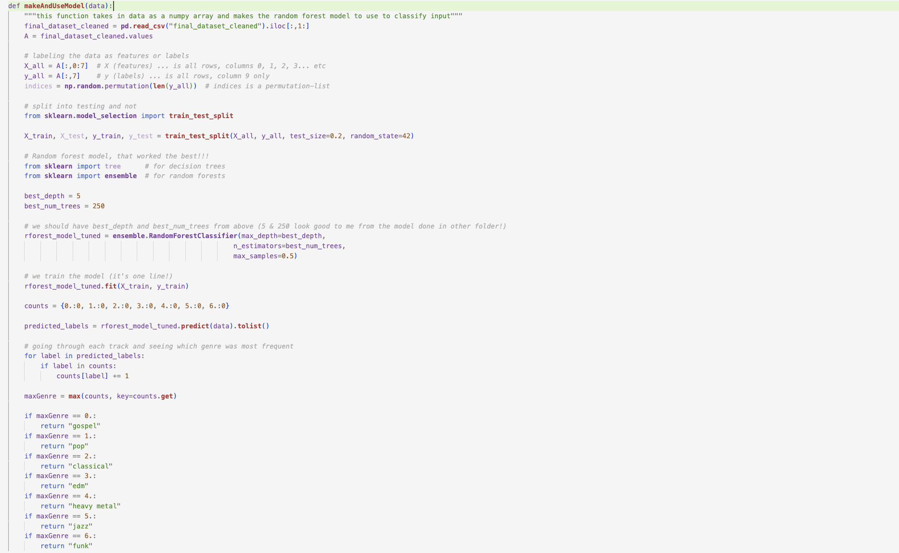

Access to demo

The Spotify GenRec was a final project completed by my friend Kacie Lee (Pomona '24) and me for our class CS181Y: Computer Science for Inquiry at Harvey Mudd College. Using our knowledge of the web framework Flask, the Python library spotipy, and random forests for classification of data, we used the web API from Spotify to create a web engine (home page displayed below) that determines the genre of a playlist the user inputs from Spotify.
The idea for this project came up when reflecting on our daily experiences and how a lot of the times when people ask us about our music tastes, it is difficult to exactly pinpoint the genres we like. I used to often say as a respone, "Whatever sounds good to my ear," which is simply so vague! Both of us being avid Spotify users, we also noticed that Spotify does not explicitly categorize the genre of songs or playlists users create on their platform, so we wanted to do so using the data from the recommended public playlists Spotify has for some featured genres on their official account. Here is an example of such a playlist we collected data from.
Using the data from Spotify playlists for the seven genres we considered (gospel, pop, classical, edm, heavy metal, jazz, and funk), our code uses the random forests ML algorithm (as shown in the code snippet above) to classify the genre of each song on a user's playlist and returns the genre that is represented the most as the genre of the playlist, after looking at all of the features provided by Spotify's web API for each song and comparing them to the previously collected data. Due to privacy concerns and authentication with Spotify's web API, we are not sharing our code for this project publically. Yet, the demo of our web engine can be accessed in the link above and the final presentation slides can be viewed here. The presentation slides details more specifically on the process behind our work, and if interested, please feel free to contact me in the email below with any questions.